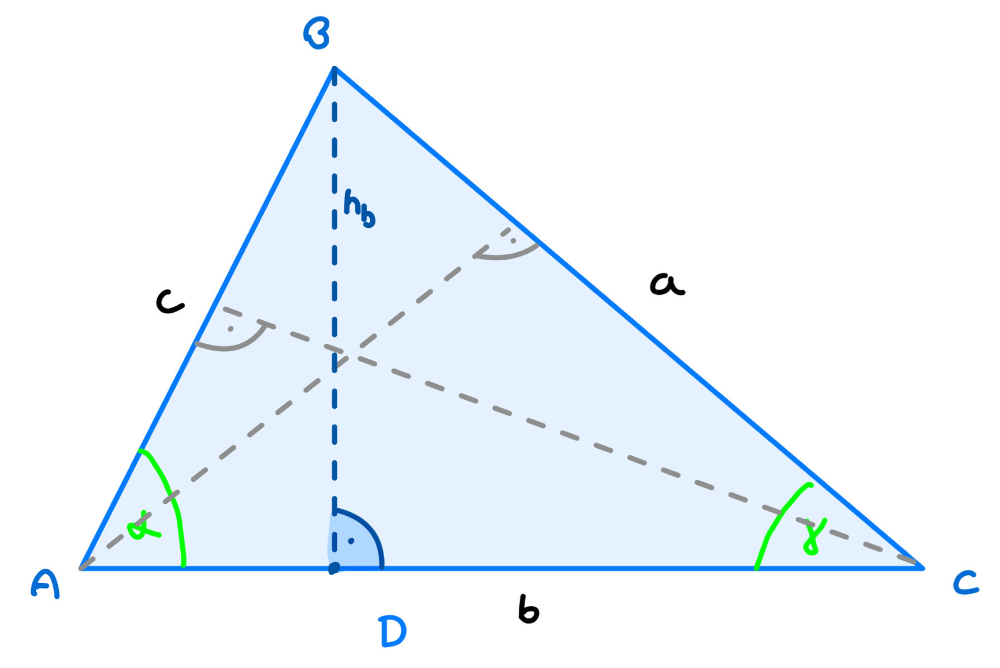
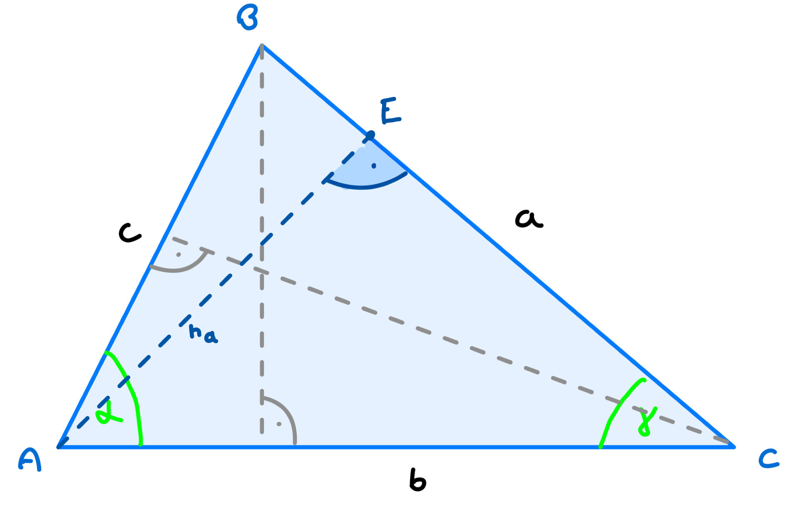

Sich den Sinussatz herzuleiten, geht am besten in einem Dreieck, da es dort auch verwendet wird, um fehlende Seiten und Winkel auszurechnen. Zuerst teilt man ein beliebiges Dreieck durch die Höhe einer Seite (hier b bzw. die höhe hb) in zwei rechtwinklige Dreiecke.
Hier musst du nur erkennen das folgendes zutrifft: sin(α) = hb/c und sin(γ) = hb/a
Wenn man diese Formeln nun nach hb umstellt, kann man
die beiden Teilgleichungen gleichsetzen:
sin(α) = hb/c also sin(α) · c = hb und sin(γ) =
hb/c also sin(γ) · c = hb
Gleichsetzten:
hb = hb
sin(α) · c = sin(γ) · a
Nach weiterem Umformen, kann man nun auf die erste Teilgleichung des Sinussatzen kommen:
sin(α) · c = sin(γ) · a |: sin(γ)
c = (sin(γ) · a) / sin(α) |: sin(α)
a/sin(α) = c/sin(γ)
Für den zweiten Teil des Sinussatzes, wird gleiches Umformen erneut durchgeführt, allerdings wird eine andere Höhe genommen(hier ha)

Aufstellen:
sin(β) = ha/c und
sin(γ) = ha/b
Umstellen:
sin(β) = ha/c also sin(β) · c = ha
und
sin(γ) = ha/b also sin(γ) · b = ha
Gleichsetzten:
ha = ha
sin(β) ·
c = sin(γ) · b
Umstellen:
sin(β) · c = sin(γ) · b |: sin(β)
c =
(sin(γ) * b) / sin(β) |: sin(γ)
Teilgleichung:
c/sin(γ) = b/sin(β)
Finale Gleichung: a/sin(α) = b/sin(β) = c/sin(γ)